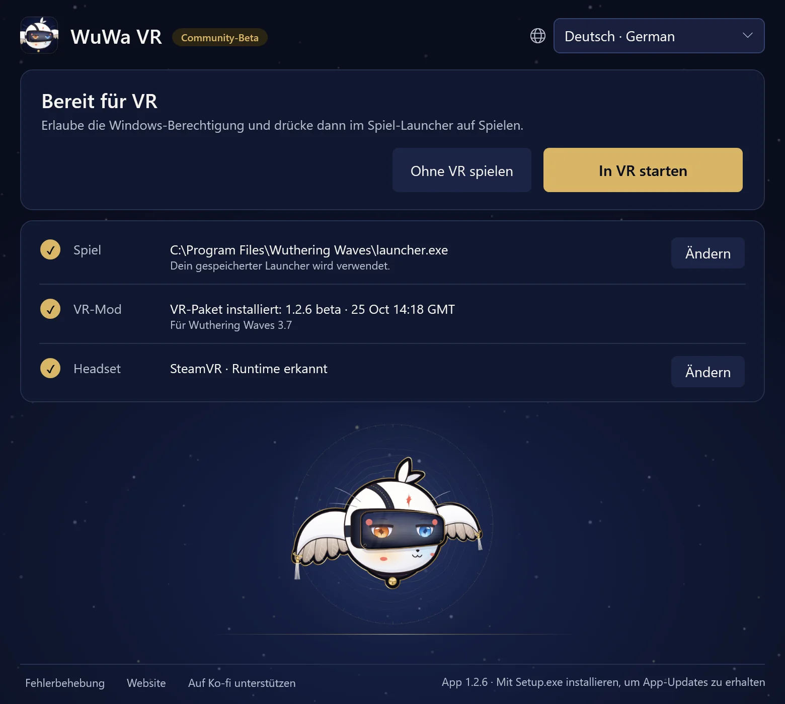

Anleitung1.2.6 Spielanleitung · Wuthering Waves 3.7 · Windows PCVR
WuWa in VR spielen
Installiere WuWa-VR-Setup.exe und öffne dann die Verknüpfung WuWa VR. Eine separate Python-Installation ist nicht nötig. Die erste Installation des VR-Pakets benötigt Internet; der kleine Setup-Download enthält die Launcher-App.
Installieren und starten
Der Launcher ist ein einziger Bildschirm. Die Überschrift sagt, was als Nächstes kommt; darunter stehen In VR starten, Ohne VR spielen und drei Zeilen: Spiel, VR-Mod und Headset. Deine Auswahl wird gespeichert, später geht es also direkt mit In VR starten los.
- Spiel zeigt die gefundene Steam- oder offizielle Kuro-Launcher-Installation. Mit Ändern wählst du eine andere; bei Steam wähle
Wuthering Waves.exe, nicht die innere Shipping-Executable. Epic wird noch nicht unterstützt. - VR-Mod zeigt das installierte Paket und die Spielversion, für die es gemacht ist. Lies beim ersten Mal den Hinweis zum Kontorisiko und wähle VR installieren. Das Paket wird vor der Installation geprüft, und die Installation startet das Spiel nicht.
- Headset zeigt die verwendete OpenXR-Runtime, starte also zuerst deine Headset-Software. Ändern öffnet Headset verwenden und Mitgelieferten Simulator verwenden, eine Desktop-Vorschau. Das Umschalten kann eine Windows-Berechtigung anfordern und braucht ein geschlossenes Spiel samt Injector; Öffnen, Installieren oder Aktualisieren des Launchers schaltet nie von selbst um.
Launcher-App ist dieses Desktop-Fenster. VR-Paket ist die Mod und ihre Werkzeuge. Das Aktualisieren des einen aktualisiert nicht automatisch das andere.


Wähle In VR starten. Dabei leuchten vier Schritte nacheinander auf: Berechtigung (wähle „Ja“ in der Windows-Abfrage), Spielen drücken (im Kuro-Launcher; Steam startet das Spiel selbst), VR startet (meist unter einer Minute) und In VR.
In VR zeigt der Launcher Du kannst dieses Fenster schließen. VR läuft weiter. Dauert der VR-Start länger als üblich, sagt er das und zeigt die Details. Nicht mehr warten bricht das Warten ab, ohne das Spiel zu schließen.
Ohne VR spielen startet dieselbe Spielinstallation ganz normal, ohne die Mod.
Steuerung im Alltag
Xbox / XInput ist der übliche Weg zu spielen. L3 / R3 bedeuten Klick auf den linken / rechten Stick. Unsicher? Halte L3 oder LT + RT eine halbe Sekunde: Unter deinem Blick erscheint eine Karte, die zeigt, was jede Taste tut, und jede Taste leuchtet beim Drücken auf. Lass zwischen zwei Kürzeln los. Die Tabellen unten listen jedes Kürzel, gruppiert wie die Karten.

- LTPortalfenster
- LBHUD-/Mausmodus
- ViewEgoansicht
- Steuerkreuz ↓Egoansicht: Vollanimation
- RTDiorama (10×)
- RBSpielkamera / feste Kamera
- MenuDiese Karte geöffnet lassen
- Y/XKamera hoch / runter
- BSpiel-UI ein / aus
- AAnsicht zentrieren
- R3WuWa VR-Menü
Gesten
- R3×2Freie Kamera
- L3×2Screenshot
- LT+RT→R3Klick: volles VR / Stereo-Leinwand
- LT+RT→R30.8 sHalten: Mono-Kino ein / aus
- LT+RT→L3Klick: Unschärfe ein / aus
- LT+RT→YDrücken: Figuren an deinen Augen ausblenden
chronohaxx.github.io/wuwa-vr
PlayStation-Unterstützung ist experimentell.
Alle Kürzel
L3 HALTEN
| L3+LT | Portalfenster |
|---|---|
| L3+LB | HUD-/Mausmodus |
| L3+View | Egoansicht |
| L3+Steuerkreuz unten | Egoansicht: Vollanimation |
| L3+RT | Diorama (10×) |
| L3+RB | Spielkamera / feste Kamera |
| L3+Menu | Diese Karte geöffnet lassen |
| L3+Y/X | Kamera hoch / runter |
| L3+Y/X | Story-Kamera: näher / zurück |
| L3+Y+X | Y + X zusammen: zurück zum Standard |
| L3+B | Spiel-UI ein / aus |
| L3+A | Ansicht zentrieren |
| L3+R3 | WuWa VR-Menü |
| R3×2 | Freie Kamera |
| L3×2 | Screenshot |
LT + RT HALTEN
| LT+RT→R3 | Klick: volles VR / Stereo-Leinwand |
|---|---|
| LT+RT→R30.8 s | Halten: Mono-Kino ein / aus |
| LT+RT→L3 | Klick: Unschärfe ein / aus |
| LT+RT→L30.8 s | Stereo-Leinwand ein / aus (0,8 s halten) |
| LT+RT→Y | Drücken: Figuren an deinen Augen ausblenden |
KAMERAS
| LB+LT/RT | Fest: weiter / näher |
|---|---|
| RB halten | Volle Geschwindigkeit bei aktivem Polar walk |
| Bei aktiver freier Kamera R3×2 | |
| Linker / rechter Stick | Freie Kamera: bewegen / umsehen |
| LT/LB | Freie Kamera: auf / ab |
| RT / doppelt RT | Freie Kamera: Boost / Turbo |
MENÜS & HUD
| LB+R3 | Einmal V; 0,8 s halten für das Tab-Rad |
|---|---|
| Bei aktivem HUD-/Mausmodus L3+LB | |
| Linker Stick | Mauszeiger bewegen |
| A/B | Klicken / zurück |
| X+linker Stick | Scrollen |
| Steuerkreuz | Karte bewegen |
| LT/RT | HUD näher / weiter |
| LB/RB | HUD runter / hoch |
WUWA VR-MENÜ
| L3+R3 | WuWa VR-Menü öffnen / schließen |
|---|---|
| Bei geöffnetem WuWa-VR-Menü L3+R3 | |
| Steuerkreuz / A / B | Navigieren / bestätigen / zurück |
| LB/RB | Seite wechseln |
| Y | Menü bewegen |
TASTATUR & MAUS
| VR-Taste | Die Taste links neben 1 halten, dann eine Taste drücken |
|---|---|
| VR-Taste+1 | Volles VR / Stereo-Leinwand |
| VR-Taste+2 | Mono-Kino |
| VR-Taste+3 | Portalfenster |
| VR-Taste+4 | Diorama (10×) |
| VR-Taste+B | Unschärfe (Tiefenunschärfe) |
| VR-Taste+N | Figuren an deinen Augen ausblenden |
| VR-Taste+H | Spiel-UI ein / aus |
| VR-Taste+R | Ansicht zentrieren |
| VR-Taste+P | Screenshot |
| VR-Taste+F | Egoansicht |
| VR-Taste+T | Spielkamera / feste Kamera |
| VR-Taste+C | Freie Kamera |
| VR-Taste+G | Egoansicht: Vollanimation |
| VR-Taste+E/Q | Kamera hoch / runter |
| VR-Taste+E+Q | E + Q zusammen: zurück zum Standard |
| VR-Taste+Mausrad | Feste Kamera näher / weiter |
| VR-Taste+M | HUD-/Mausmodus |
| VR-Taste+K | Diese Karte geöffnet lassen |
| Einfg | WuWa VR-Menü öffnen / schließen |
| Bei aktiver freier Kamera VR-Taste+C | |
| WASD/Maus | Freie Kamera: bewegen / umsehen |
| Leertaste/Strg | Freie Kamera: auf / ab |
| Umschalt/Umschalt×2 | Freie Kamera: Boost / Turbo |
Tastatur und Maus: Insert öffnet oder schließt das Menü. In vollem VR zeigt ein Pfeil, wo die Maus auf den Spielmenüs ist; er verschwindet, sobald du den Controller benutzt. Solange das Spiel im Vordergrund ist, bleibt die Maus in seinem Fenster; Maus im Spielfenster halten auf der Menüseite Komfort schaltet das aus.
PS4 / PS5: Steam Input oder eine andere funktionierende Xbox-/XInput-Zuordnung verwendet dieselben Kurzbefehle. Kreuz / Kreis / Quadrat / Dreieck sind A / B / X / Y, L1 / R1 sind LB / RB, L2 / R2 sind LT / RT, Share / Create ist View und Options ist Menu. Experimentelle direkte DualShock 4- und DualSense-Eingabe funktioniert auch, wenn kein XInput-Pad aktiv ist, aber das Spiel reagiert möglicherweise auf dieselben Tasten. Siehe die vollständige Referenz.
Die Seite View im WuWa-VR-Menü hat die Optionen für Ansicht, Unschärfe und Close-ups. Automatische Kinoleinwand ist an: Story-Videos wechseln ins Mono-Theater und Story-Bilder auf die Stereo-Leinwand, danach kommt deine Ansicht zurück; Gespräche behalten die Ansicht, die du gewählt hast. Das Ansichtskürzel funktioniert immer.
Optionales Laufen mit VR-Controllern, Diorama und Hand-Demo
VR-Controller (Seiten Start und Steuerung) lassen Quest-Controller als Xbox-Pad zum Gehen und Umsehen dienen. Sie starten bei jedem Start aus. Halte die linke Menu-Taste 1 Sekunde, um sie ein- oder auszuschalten (ein Vibrieren bestätigt); kurz gedrückt ist sie weiterhin Start. Ohne Menu-Taste (Index) halte beide Stick-Klicks 1 Sekunde, solange sie aus sind. Mit VR-Controllern nennen die Karten Griffe, Trigger und Sticks.
Teilen mit Xbox / Laufband wird gespeichert: Beide zusammen (Standard; Gehen auf dem Laufband funktioniert weiter), Zuletzt benutzt gewinnt oder Nur VR. Controller-Steckplatz steht standardmäßig auf Automatisch: Er nimmt den Steckplatz mit einem Controller, etwa das virtuelle Pad von Reality Runner. Beides steht auf der Seite Steuerung im WuWa VR-Menü, zusammen mit Laufbandlauf: Ist Reality Runner offen, startet Gehen einen Lauf, der deine Zeit misst und deine Route im Spiel speichert. Siehe die Referenz zum Gehen.
Das Diorama braucht Native Stereo und vergrößert Kopfbewegungen mit dem Weltmaßstab; Ausschalten stellt deinen normalen Maßstab wieder her. Diorama-Maßstab auf der Seite Kamera legt seine Größe fest (2× bis 10×). Die Hand- / Finger-Demo ist nur eine Anzeige, ohne Greifen oder Gesten.
Updates und Rollback
Gibt es eine neue Version der App, bietet der Launcher sie an: Aktualisiere und starte ihn neu, wenn nichts läuft. Startet die App bei geschlossenem Spiel, installiert sie ein neueres VR-Paket für dieselbe Spielversion selbst; dein bisheriges Paket bleibt installiert. Fehlerbehebung → Weitere Optionen listet die installierten und veröffentlichten Versionen und bietet Nach Updates suchen. Eine fehlgeschlagene Update-Suche oder eine zwischengespeicherte Liste bedeutet nicht, dass dein Paket aktuell ist.
Diese Version kombiniert die App 1.2.6 mit dem Paket beta-1-2-6 für WuWa 3.7. Um ein VR-Paket-Update rückgängig zu machen, schließe das Spiel und verwende dann Vorher installierte Version verwenden unter Fehlerbehebung → Weitere Optionen. Die Launcher-App wird dabei nicht zurückgesetzt. Einstellungen, Sicherungen und Aufnahmen bleiben erhalten.
Wenn das App-Update blockiert ist, verwende das neueste Setup von der Website. Eine Neuinstallation beendet keinen hängenden Hintergrund-Worker; verwende zuerst die Wiederherstellungsschritte unten.
Portable-Ausweichlösung
Lade WuWa-VR-Launcher.zip aus dem passenden Release herunter, entpacke alles und öffne WuWa VR Launcher.exe. Halte die Ordner zusammen. Dies öffnet die separate Webtool-Oberfläche; die installierte Desktop-App wird dabei nicht aktualisiert.
Wenn etwas schiefgeht
Öffne Fehlerbehebung unten im Launcher und probiere die Lösungen von oben nach unten. Mod-Dateien reparieren installiert die Dateien der Mod erneut aus einer geprüften Kopie und behält deine Einstellungen. Mod-Einstellungen zurücksetzen sichert deine Einstellungen und stellt dann die Auslieferungswerte der Mod wieder her. Problembericht speichern packt deine Logs und Einstellungen ohne deinen Windows-Benutzernamen in ein ZIP auf dem Desktop: Schick es mit, wenn du um Hilfe bittest.
Weitere Optionen enthält den Rest: Controller-Prüfung, Startbereitschaft prüfen, Diagnose kopieren, Einstellungsordner öffnen, die installierten Versionen, Hängende Launcher-Prozesse und Deinstallation vorbereiten.
- Start hängt: Verwende Nicht mehr warten und warte bis zu vier Sekunden. Kann der Launcher nicht bestätigen, dass der Start beendet ist, bietet er Hängende Launcher-Prozesse an: Wähle Hängende Launcher-Prozesse suchen, markiere nur den Prozess, den du beenden willst, und bestätige Auswahl beenden. Nichts ist vorausgewählt. Wähle danach Verbindung erneut versuchen.
- Lässt sich nicht schließen: Nur den Launcher schließen schließt das Fenster und lässt Hintergrundarbeit unangetastet. Die Wiederherstellung stoppt nie WuWa, Steam, den Injector oder eine VR-Runtime.
- Controller fehlt: Controller-Prüfung liest XInput-Slots und HidHide-Informationen, ohne Einstellungen zu ändern. Ein verbundener Slot beweist nicht, dass das Spiel die Tasten empfängt.
- HUD oder Menüs sehen falsch aus: Die Seite Oberfläche im WuWa-VR-Menü hat HUD-Layout aktualisieren; ESC öffnen und schließen ordnet das HUD ebenfalls neu an. HUD und Menüs nutzen das 16:9-Layout des flachen Spiels; 16:9-UI-Layout auf derselben Seite schaltet auf das ältere, höhere Layout um. L3 + B zeigt ausgeblendete Spiel-UI wieder an.
- Menü fehlt: Ctrl+Shift+Home öffnet das WuWa-VR-Menü und Ctrl+Shift+End das klassische UEVR-Fenster, unabhängig von den Menüeinstellungen.
- Ein Problem melden: Wähle auf der Seite Aufnehmen im WuWa-VR-Menü aus, was schiefgelaufen ist, und wähle Bericht speichern; verwende im Launcher Problembericht speichern. Gib die App- und VR-Paketversionen an, was passiert ist, und eine Aufnahme, falls du eine hast, und hänge alles an ein Issue an.
Heruntergeladene Versionen entfernen oder deinstallieren
Fehlerbehebung → Weitere Optionen → Deinstallation vorbereiten setzt zuerst deine UEVR-Einstellungen auf den Stand vor der Mod zurück (die der Mod werden vorher gesichert) und entfernt dann nach deiner Bestätigung geprüfte Downloads, wenn nichts läuft. Deinstalliere danach die App unter Windows-Einstellungen → Apps. Spiel, Sicherungen, Aufnahmen, das aktive OpenXR-Paket sowie belegte oder ungeprüfte Dateien bleiben erhalten. Eine Neuinstallation beendet keinen hängenden Hintergrundprozess.
Aufnahme und aktuelle Grenzen
Starte und stoppe Aufnahmen im WuWa-VR-Menü (Video aufnehmen) oder über Entwicklertools unter Fehlerbehebung → Weitere Optionen. Aufnahmen funktionieren mit SteamVR und dem mitgelieferten Simulator, nicht mit VDXR; mit SteamVR können sie auch den Spielton und ein Mikrofon aufnehmen. Spieler-IDs werden während der Aufnahme verdeckt. Prüfe Videos vor dem Teilen auf Namen und Kontodaten. Siehe den Feedback-Leitfaden.
Was für diese Version getestet wurde und die bekannten Grenzen stehen in den Versionshinweisen. Bekannte Probleme sind unter anderem Questmarker, die in vollem VR etwas unter ihrem Ziel sitzen, flachere Symbole auf dem Charakterbildschirm (er nutzt das höhere Layout, damit seine Bodenspiegelung live bleibt), sich bewegende Hintergründe flacher Menüs und lange Hänger in Szenen oder Dialogen. Das Mono-Theater hilft bei manchen Menüs und Zwischensequenzen.